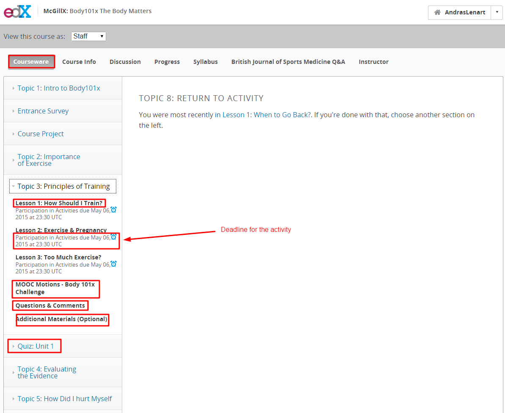
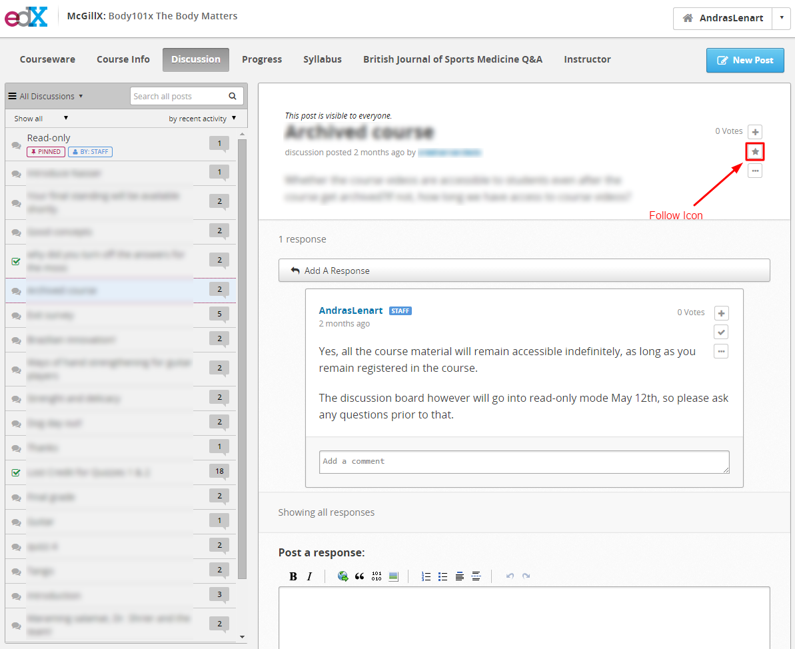
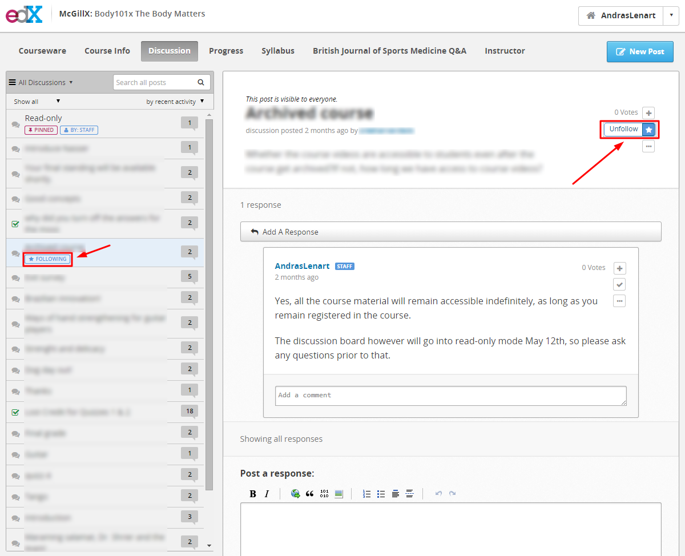
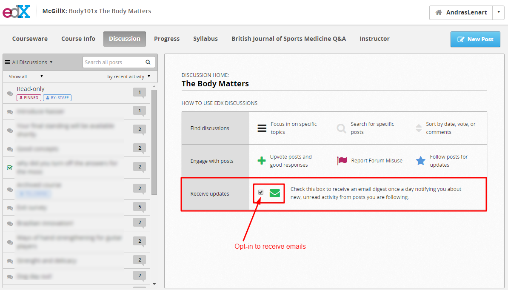
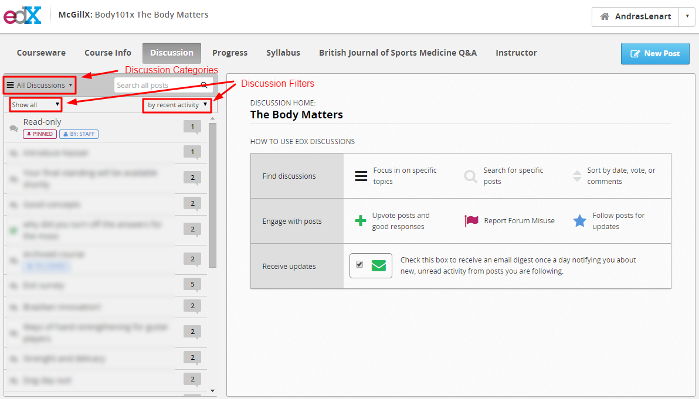

Discussion Monitoring¶
General Advice¶
- Do your best to respond to students in a timely fashion. For issues that may take further investigation, inform students that you are looking into the issues and will get back to them shortly.
- When posting or responding in the discussion board try to support your claims and arguments with citations. If you are stating your opinion, make sure to mention that in your comment.
- Students often forget to reference the location of the issue within the course. Politely ask them refer to the specific week/topic #, video #, question #, and time mark in the video so that you may better assist them.

- After you answer a student’s question, try to stimulate further discussion. For example, you could ask a follow up question or ask other students to chime in.
- When posting or responding in the discussion board try to support your claims and arguments with citations. If you are stating your opinion, make sure to mention that in your comment.
- If a student makes outlandish claims, it may be easiest to address the topic by asking where they have heard that idea. This can lead to a discussion about the veracity and reputation of sources.
Following Discussion Threads¶
After responding to a student post, follow the post by pressing the star icon. This will notify you if a student asks a follow up question, or response on that post at a later date.

Once you follow a post, the star icon will be blue, and an emblem will be visible in the side bar.

Subscribing to email digests¶
To receive notifications of new responses in the daily digest email, make sure you have signed up for it. This page is displayed when you click the discussion tab in the header.

Discussion Filtering¶
To filter discussions by category or by type, click on the appropriate icon.
